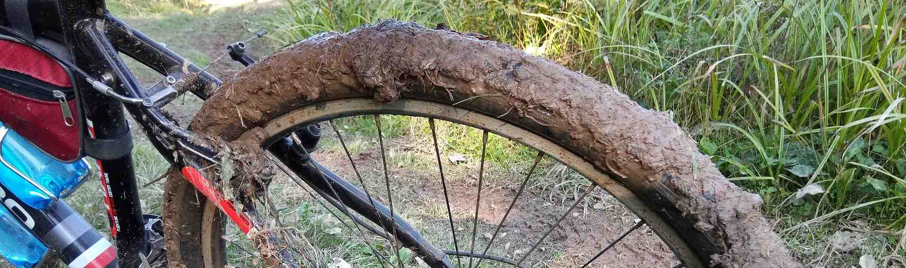

Hi, I'm Dmitriy Sorokin! I've been actively involved in biking since 2010. On this site I will collect the most significant for me bike trips with links to photo albums and gps-tracks to some of them. I would be glad if my information will be useful to bicycle tourists to compose their routes or just fill you with positive emotions from viewing the photos, inspire hiking romance!
I respect privacy, so all participants' faces are not digitally analyzed and then identified.
Привет, я Дмитрий Сорокин! Велотуризмом активно занимаюсь с 2010 года. На этом сайте я собраю наиболее значимые для меня велопоходы со ссылками на фотоальбомы и gps-треки к некоторым из них. Буду рад, если моя информация будет полезна велотуристам для составления своих маршрутов или просто наполнит Вас положительными эмоциями от просмотра фотографий, вдохновит на походную романтику!
Я уважаю тайну личной жизни, поэтому все лица участников не поддаются цифровому анализу с последующей идентификацией.
Route: Tver - Konakovo - Meldino. Weekend bike trip (TWD-2d). July 9-10, 2022.
Маршрут: Тверь - Конаково - Мельдино. Велопоход выходного дня (ПВД-2д). 9-10 июля 2022 год.
Photos / Фотографии Download route(gpx) / Скачать маршрут(gpx)Route: Dubosekovo - Klushino - Borodino. Weekend bike trip (TWD-2d). June 24-25, 2022.
Маршрут: Дубосеково - Клушино - Бородино. Велопоход выходного дня (ПВД-2д). 24-25 июня 2022 год.
Photos / Фотографии Download route(gpx) / Скачать маршрут(gpx)Route: Klin - Vysokovsk - Nudol - Novopetrovskoe - Kolyubakino - Vasilevskoe - Tuchkovo. Weekend bike trip (TWD-2d). June 4-5, 2022.
Маршрут: Клин - Высоковск - Нудоль - Новопетровское - Колюбакино - Васильевское - Тучково. Велопоход выходного дня (ПВД-2д). 4-5 июня 2022 год.
Photos / Фотографии Download route(gpx) / Скачать маршрут(gpx)Route: Yahroma - Dmitrov - Dubna - Konakovo. Weekend bike trip (TWD-1d). May 14, 2022.
Маршрут: Яхрома - Дмитров - Дубна - Конаково. Велопоход выходного дня (ПВД-1д). 14 мая 2022 год.
Photos / Фотографии Download route(gpx) / Скачать маршрут(gpx)Route: Kimry - Strelchiha - Kimry. Weekend bike trip (TWD-2d). May 1-2, 2022.
Маршрут: Кимры - Стрельчиха - Кимры. Велопоход выходного дня (ПВД-2д). 1-2 мая 2022 год.
Photos / Фотографии Download route(gpx) / Скачать маршрут(gpx)Route: Solnechnogorsk - Tolstyakovo - Kulikovo - Meldino. Weekend bike trip (TWD-1d). April 23, 2022.
Маршрут: Солнечногорск - Толстяково - Куликово - Мельдино. Велопоход выходного дня (ПВД-1д). 23 апреля 2022 год.
Photos / Фотографии Download route(gpx) / Скачать маршрут(gpx)Route: Moscow - Lianozovo - Dolgoprudny - Klyazmenskoe reservoir - National Park "Elk Island". Weekend bike trip (TWD-1d). October 23, 2021. The odometer passed the 10.000 km - the total mileage of the bicycle since the beginning of its operation.
Маршрут: Москва - Лианозово - Долгопрудный - Клязьменское водохранилище - Национальный парк "Лосиный остров". Велопоход выходного дня (ПВД-1д). 23 октября 2021 год. Одометр перевалил отметку в 10.000 километров - общий пробег велосипеда с начала его эксплуатации.
Photos / Фотографии Download route(gpx) / Скачать маршрут(gpx)
Route: Klin - Istra. Weekend bike trip (TWD-2d). October 9-10, 2021.
Маршрут: Клин - Истра. Велопоход выходного дня (ПВД-2д). 9-10 октября 2021 год.
Photos / Фотографии Download route(gpx) / Скачать маршрут(gpx)Route: Voskresensk - Kolomna - Ozery - Serpukhov. Weekend bike trip (TWD-2d). September 11-12, 2021.
Маршрут: Воскресенск - Коломна - Озёры - Серпухов. Велопоход выходного дня (ПВД-2д). 11-12 сентября 2021 год.
Photos / Фотографии Download route(gpx) / Скачать маршрут(gpx)Route: Dmitrov - Yakhroma - Senezh (Solnechnogorsk). Weekend bike trip (TWD-1d). August 28, 2021.
Маршрут: Дмитров - Яхрома - Сенеж (Солнечногорск). Велопоход выходного дня (ПВД-1д). 28 августа 2021 год.
Photos / Фотографии Download route(gpx) / Скачать маршрут(gpx)
Route: Kubinka - Tuchkovo - Zvenigorod. Weekend bike trip (TWD-2d). July 24-25, 2021.
Маршрут: Кубинка - Тучково - Звенигород. Велопоход выходного дня (ПВД-2д). 24-25 июля 2021 год.
Photos / Фотографии Download route(gpx) / Скачать маршрут(gpx)Route: Mozhaisk - Ruza - Istra. Weekend bike trip (TWD-2d). July 17-18, 2021.
Маршрут: Можайск - Руза - Истра. Велопоход выходного дня (ПВД-2д). 17-18 июля 2021 год.
Photos / Фотографии Download route(gpx) / Скачать маршрут(gpx)
Route: Reshetnikovo - Zakharovo - Meldino. Weekend bike trip (TWD-1d). July 10, 2021.
Маршрут: Решетниково - Захарово - Мельдино. Велопоход выходного дня (ПВД-1д). 10 июля 2021 год.
Photos / Фотографии Download route(gpx) / Скачать маршрут(gpx)
Route: Sergiev Posad - Khotkovo - Dmitrov. Weekend bike trip (TWD-1d). July 3, 2021.
Маршрут: Сергиев Посад - Хотьково - Дмитров. Велопоход выходного дня (ПВД-1д). 3 июля 2021 год.
Photos / Фотографии Download route(gpx) / Скачать маршрут(gpx)Route: Petushki - Pokrov - Kolchugino - Aleksandrov. Weekend bike trip (TWD-2d). June 19-20, 2021.
Маршрут: Петушки - Покров - Кольчугино - Александров. Велопоход выходного дня (ПВД-2д). 19-20 июня 2021 год.
Photos / Фотографии Download route(gpx) / Скачать маршрут(gpx)Route: Serpukhov - Stupino. Weekend bike trip (TWD-2d). May 28-29, 2021.
Маршрут: Серпухов - Ступино. Велопоход выходного дня (ПВД-2д). 28-29 мая 2021 год.
Photos / Фотографии Download route(gpx) / Скачать маршрут(gpx)
Route: Tver - Kimry - Taldom - Verbilki - Dmitrov. Weekend bike trip (TWD-2d). May 15-16, 2021.
Маршрут: Тверь - Кимры - Талдом - Вербилки - Дмитров. Велопоход выходного дня (ПВД-2д). 15-16 мая 2021 год.
Photos / Фотографии Download route(gpx) / Скачать маршрут(gpx)
Route: Klin - Zakharovo - Vozdvizhenskoye - Klin. Weekend bike trip (TWD-1d). May 10, 2021.
Маршрут: Клин - Захарово - Воздвиженское - Клин. Велопоход выходного дня (ПВД-1д). 10 мая 2021 год.
Photos / Фотографии Download route(gpx) / Скачать маршрут(gpx)Route: Zhukovka - Bytosh - Kirov. Weekend bike trip (TWD-2d). June 1-2, 2019.
Маршрут: Жуковка - Бытошь - Киров. Велопоход выходного дня (ПВД-2д). 1-2 июня 2019 год.
Photos / Фотографии Download route(gpx) / Скачать маршрут(gpx)Route: Pochep - Zhiryatino - Zhukovka. Weekend bike trip (TWD-1d). May 3, 2019.
Маршрут: Почеп - Жирятино - Жуковка. Велопоход выходного дня (ПВД-1д). 3 мая 2019 год.
Download route(gpx) / Скачать маршрут(gpx)
Route: Vorotynsk - Tula - Serpukhov - Obninsk - Kondrovo - Vorotynsk. August 5-13, 2018.
Маршрут: Воротынск - Тула - Серпухов - Обнинск - Кондрово - Воротынск. 5-13 августа 2018 год.
Photos / Фотографии Download route(gpx) / Скачать маршрут(gpx)
Route: Karachev - Sinezirky. Weekend bike trip (TWD-1d). June 17, 2018.
Маршрут: Карачев - Синезёрки. Велопоход выходного дня (ПВД-1д). 17 июня 2018 год.
Download route(gpx) / Скачать маршрут(gpx)Route: Karachev - Leski - Navlya. Weekend bike trip (TWD-1d). May 26, 2018.
Маршрут: Карачев - Лески - Навля. Велопоход выходного дня (ПВД-1д). 26 мая 2018 год.
Photos / Фотографии Download route(gpx) / Скачать маршрут(gpx)Route: Zhukovka - Kletnya - Mglin - Unecha. Weekend bike trip (TWD-2d). May 4-5, 2018.
Маршрут: Жуковка - Клетня - Мглин - Унеча. Велопоход выходного дня (ПВД-2д). 4-5 мая 2018 год.
Photos / Фотографии Download route(gpx) / Скачать маршрут(gpx)Route: Suzemka - Trubchevsk - Pogar - Starodub - Unecha. Weekend bike trip (TWD-2d). April 29-30, 2018.
Маршрут: Суземка - Трубчевск - Погар - Стародуб - Унеча. Велопоход выходного дня (ПВД-2д). 29-30 апреля 2018 год.
Photos / Фотографии Download route(gpx) / Скачать маршрут(gpx)Route: Kaluga 2 - Kaluga - Peremyshl - Kozelsk - Duminichi. Weekend bike trip (TWD-2d). August 19-20, 2017.
Маршрут: Калуга 2 - Калуга - Перемышль - Козельск - Думиничи. Велопоход выходного дня (ПВД-2д). 19-20 августа 2017 год.
Photos / Фотографии Download route(gpx) / Скачать маршрут(gpx)
Route: Orel - Komarichi - Sevsk - Suzemka. Weekend bike trip (TWD-2d). August 5-6, 2017.
Маршрут: Орёл - Комаричи - Севск - Суземка. Велопоход выходного дня (ПВД-2д). 5-6 августа 2017 год.
Photos / Фотографии Download route(gpx) / Скачать маршрут(gpx)
Route: Hotinets - Bolhov - Belyov - Kozelsk - Suhinichi. Weekend bike trip (TWD-2d). June 24-25, 2017.
Маршрут: Хотынец - Болхов - Белёв - Козельск - Сухиничи. Велопоход выходного дня (ПВД-2д). 24-25 июня 2017 год.
Photos / Фотографии Download route(gpx) / Скачать маршрут(gpx)
Route: Duminichi - Khvastovichi - Bryansk. Weekend bike trip (TWD-2d). June 17-18, 2017.
Маршрут: Думиничи - Хвастовичи - Брянск. Велопоход выходного дня (ПВД-2д). 17-18 июня 2017 год.
Photos / Фотографии Download route(gpx) / Скачать маршрут(gpx)
Route: Kaluga 2 - Kaluga - Ferzikovo - Dugna - Kaluga 2. Weekend bike trip (TWD-3d). April 29 - may 1, 2017.
Маршрут: Калуга 2 - Калуга - Ферзиково - Дугна - Калуга 2. Велопоход выходного дня (ПВД-3д). 29 апреля - 1 мая 2017 год.
Photos / Фотографии Download route(gpx) / Скачать маршрут(gpx)
Route: Sudimir - Zhizdra - Ludinovo - Kirov. Weekend bike trip (TWD-1d). March 12, 2017.
Маршрут: Судимир-Жиздра-Людиново-Киров. Велопоход выходного дня (ПВД-1д). 12 марта 2017 год.
Photos / Фотографии Download route(gpx) / Скачать маршрут(gpx)
Route: Duminichi - Kirov. Weekend bike trip (TWD-1d). November 15, 2016.
Маршрут: Думиничи - Киров. Велопоход выходного дня (ПВД-1д). 15 ноября 2016 год.
Photos / Фотографии Download route(gpx) / Скачать маршрут(gpx)Route: Bryansk - Fokino - Sudimir. Weekend bike trip (TWD-1d). September 25, 2016.
Маршрут: Брянск - Фокино - Судимир. Велопоход выходного дня (ПВД-1д). 25 сентября 2016 год.
Photos / Фотографии Download route(gpx) / Скачать маршрут(gpx)
Route: Orel - Shablykino - Navlya. Weekend bike trip (TWD-2d). September 3-4, 2016.
Маршрут: Орёл - Шаблыкино - Навля. Велопоход выходного дня (ПВД-2д). 3-4 сентября 2016 год.
Photos / Фотографии Download route(gpx) / Скачать маршрут(gpx)
Route: Suzemka - Trubchevsk - Pochep - Kletnya - Zhukovka. Weekend bike trip (TWD-2d). July 30-31, 2016.
Маршрут: Суземка - Трубчевск - Почеп - Клетня - Жуковка. Велопоход выходного дня (ПВД-2д). 30-31 июля 2016 год.
Photos / Фотографии Download route(gpx) / Скачать маршрут(gpx)
Route: Zhukovka - Desnogorsk - Zhukovka. Weekend bike trip (TWD-2d). July 2-3, 2016.
Маршрут: Жуковка - Десногорск - Жуковка. Велопоход выходного дня (ПВД-2д). 2-3 июля 2016 год.
Photos / Фотографии Download route(gpx) / Скачать маршрут(gpx)
Route: Sukhinichi - Kozelsk - Chertovo Gorodische - Sukhinichi. Weekend bike trip (TWD-2d). May 8-9, 2016.
Маршрут: Сухиничи - Козельск - Чёртово городище - Сухиничи. Велопоход выходного дня (ПВД-2д). 8-9 мая 2016 год.
Photos / Фотографии Download route(gpx) / Скачать маршрут(gpx)
Route: Hotynets - Hvastovichi - Sudimir. Weekend bike trip (TWD-1d). April 24, 2016.
Маршрут: Хотынец - Хвастовичи - Судимир. Велопоход выходного дня (ПВД-1д). 24 апреля 2016 год.
Photos / Фотографии Download route(gpx) / Скачать маршрут(gpx)Route: Altuhovo - Holmechi - Suzemka. Weekend bike trip (TWD-1d). April 10, 2016.
Маршрут: Алтухово - Холмечи - Суземка. Велопоход выходного дня (ПВД-1д). 10 апреля 2016 год.
Photos / Фотографии Download route(gpx) / Скачать маршрут(gpx)Route: Zhukovka - Seltso - Bryansk. Weekend bike trip (TWD-1d). April 3, 2016.
Маршрут: Жуковка - Сельцо - Брянск. Велопоход выходного дня (ПВД-1д). 3 апреля 2016 год.
Photos / Фотографии Download route(gpx) / Скачать маршрут(gpx)Route: Winter forest. Weekend bike trip (TWD-1d). January 17, 2016.
Маршрут: Зимний лес. Велопоход выходного дня (ПВД-1д). 17 января 2016 год.
Photos / ФотографииRoute: Bryansk - Snezhka - Medvezhi pechi - Kozelkino. Weekend bike trip (TWD-1d). November 27, 2015.
Маршрут: Брянск - Снежка - Медвежьи печи - Козёлкино. Велопоход выходного дня (ПВД-1д). 27 ноября 2015 год.
Photos / ФотографииRoute: Bryansk - Batagovo - Bryansk. Weekend bike trip (TWD-1d). November 8, 2015.
Маршрут: Брянск - Батагово - Брянск. Велопоход выходного дня (ПВД-1д). 8 ноября 2015 год.
Photos / ФотографииRoute: Bryansk - Medvezhi pechi - Bryansk. Weekend bike trip (TWD-1d). November 5, 2015.
Маршрут: Брянск - Медвежьи печи - Брянск. Велопоход выходного дня (ПВД-1д). 5 ноября 2015 год.
Photos / ФотографииRoute: Bryansk - Dyatkovo - Zhukovka - Bryansk. Weekend bike trip (TWD-2d). August 22-23, 2015.
Маршрут: Брянск - Дятьково - Жуковка - Брянск. Велопоход выходного дня (ПВД-2д). 22-23 августа 2015 год.
Photos / Фотографии Download route(gpx) / Скачать маршрут(gpx)Route: Bryansk - Karachev - Zhudre - Hvastovichi - Bryansk. Weekend bike trip (TWD-2d). July 24-25, 2015.
Маршрут: Брянск - Карачев - Жудре - Хвастовичи - Брянск. Велопоход выходного дня (ПВД-2д). 24-25 июля 2015 год.
Photos / Фотографии Download route(gpx) / Скачать маршрут(gpx)Route: Bryansk - Paltso - Karachev. Weekend bike trip (TWD-2d). May 30-31, 2015.
Маршрут: Брянск - Пальцо - Карачев. Велопоход выходного дня (ПВД-2д). 30-31 мая 2015 год.
Photos / Фотографии Download route(gpx) / Скачать маршрут(gpx)Route: Bryansk - Vygonichi - Perethorgi - Bryansk. Weekend bike trip (TWD-2d). May 9-10, 2015.
Маршрут: Брянск - Выгоничи - Переторги - Брянск. Велопоход выходного дня (ПВД-2д). 9-10 мая 2015 год.
Photos / Фотографии Download route(gpx) / Скачать маршрут(gpx)Route: Bryansk - Pyatiletka - Usovye - Bryansk. Weekend bike trip (TWD-1d). April 17, 2015.
Маршрут: Брянск - Пятилетка - Усовье - Брянск. Велопоход выходного дня (ПВД-1д). 17 апреля 2015 год.
Photos / Фотографии Download route(gpx) / Скачать маршрут(gpx)Route: Bryansk - Domashyovo - Seltso - Bryansk. Weekend bike trip (TWD-1d). March 21, 2015.
Маршрут: Брянск-Домашёво-Сельцо-Брянск. Велопоход выходного дня (ПВД-1д). 21 марта 2015 год.
Photos / Фотографии Download route(gpx) / Скачать маршрут(gpx)Route: Bryansk - Sven - Styazhnoye - Hatsun - Bryansk. Weekend bike trip (TWD-1d). March 15, 2015.
Маршрут: Брянск - Свень - Стяжное - Хацунь - Брянск. Велопоход выходного дня (ПВД-1д). 15 марта 2015 год.
Photos / Фотографии Download route(gpx) / Скачать маршрут(gpx)Route: Winter forest. Weekend bike trip (TWD-1d). January 1, 2015.
Маршрут: Зимний лес. Велопоход выходного дня (ПВД-1д). 1 января 2015 год.
Route: Bryansk region. Weekend bike trip (TWD-1d). November 4, 2014.
Маршрут: Брянская область. Велопоход выходного дня (ПВД-1д). 4 ноября 2014 год.
Photos / ФотографииRoute: Bryansk region. Weekend bike trip (TWD-1d). November 3, 2014.
Маршрут: Брянская область. Велопоход выходного дня (ПВД-1д). 3 ноября 2014 год.
Photos / ФотографииRoute: Bryansk region. Weekend bike trip (TWD-1d). October 26, 2014.
Маршрут: Брянская область. Велопоход выходного дня (ПВД-1д). 26 октября 2014 год.
Photos / ФотографииRoute: Bryansk region. Weekend bike trip (TWD-1d). October 18, 2014.
Маршрут: Брянская область. Велопоход выходного дня (ПВД-1д). 18 октября 2014 год.
Photos / ФотографииRoute: Vasilevka - Navlya - Vzdruzhnoye - Vasilevka. Weekend bike trip (TWD-2d). June 28-29, 2014.
Маршрут: Васильевка - Навля - Вздружное - Васильевка. Велопоход выходного дня (ПВД-2д). 28-29 июня 2014 год.
Photos / Фотографии Download route(gpx) / Скачать маршрут(gpx)Route: Bryansk region. Weekend bike trip (TWD-1d). May 31, 2014.
Маршрут: Брянская область. Велопоход выходного дня (ПВД-1д). 31 мая 2014 год.
Photos / ФотографииRoute: Bryansk - Zhiryatino - Vygonichi. Weekend bike trip (TWD-1d). October 12, 2013.
Маршрут: Брянск - Жирятино - Выгоничи. Велопоход выходного дня (ПВД-1д). 12 октября 2013 год.
Photos / Фотографии Download route(gpx) / Скачать маршрут(gpx)Route: Bryansk region. Weekend bike trip (TWD-1d). July 11, 2013.
Маршрут: Брянская область. Велопоход выходного дня (ПВД-1д). 11 июля 2013 год.
Photos / Фотографии
Route: Bryansk - Hotynets - Zhudersky - Karachev. Weekend bike trip (TWD-2d). July 3-4, 2013.
Маршрут: Брянск - Хотынец - Жудерский - Карачев. Велопоход выходного дня (ПВД-2д). 3-4 июля 2013 год.
Photos / Фотографии Download route(gpx) / Скачать маршрут(gpx)Route: Bryansk - Ovstug - Bryansk. Weekend bike trip (TWD-1d). June 9, 2013.
Маршрут: Брянск - Овстуг - Брянск. Велопоход выходного дня (ПВД-1д). 9 июня 2013 год.
Photos / Фотографии Download route(gpx) / Скачать маршрут(gpx)Route: Bryansk region. Weekend bike trip (TWD-1d). August 26, 2012.
Маршрут: Брянская область. Велопоход выходного дня (ПВД-1д). 26 августа 2012 год.
Photos / Фотографии
Route: Bryansk region. Weekend bike trip (TWD-1d). August 25, 2012.
Маршрут: Брянская область. Велопоход выходного дня (ПВД-1д). 25 августа 2012 год.
Photos / Фотографии
Route: Bryansk region. Weekend bike trip (TWD-1d). June 30, 2012.
Маршрут: Брянская область. Велопоход выходного дня (ПВД-1д). 30 июня 2012 год.
Photos / ФотографииRoute: Bryansk - Vygonichi - Trubchevsk. Weekend bike trip (TWD-1d). June 2, 2012.
Маршрут: Брянск - Выгоничи - Трубчевск. Велопоход выходного дня (ПВД-1д). 2 июня 2012 год.
Photos / Фотографии Download route(gpx) / Скачать маршрут(gpx)Route: Bryansk region. Weekend bike trip (TWD-1d). April 14, 2012.
Маршрут: Брянская область. Велопоход выходного дня (ПВД-1д). 14 апреля 2012 год.
Photos / Фотографии
Route: Bryansk region. Weekend bike trip (TWD-1d). October 30, 2011.
Маршрут: Брянская область. Велопоход выходного дня (ПВД-1д). 30 октября 2011 год.
Photos / ФотографииRoute: Bryansk region. Weekend bike trip (TWD-1d). July 16, 2011.
Маршрут: Брянская область. Велопоход выходного дня (ПВД-1д). 16 июля 2011 год.
Photos / ФотографииRoute: Zavidovo - Konakovo - Dubna. Weekend bike trip (TWD-2d). June 4-5, 2011.
Маршрут: Завидово - Конаково - Дубна. Велопоход выходного дня (ПВД-2д). 4-5 июня 2011 год.
Photos / Фотографии Download route(gpx) / Скачать маршрут(gpx)Route: Sergiev Posad - Dmitrov. Weekend bike trip (TWD-1d). April 16, 2011.
Маршрут: Сергиев Посад - Дмитров. Велопоход выходного дня (ПВД-1д). 16 апреля 2011 год.
Photos / Фотографии Download route(gpx) / Скачать маршрут(gpx)Route: Moscow. Weekend bike trip (TWD-1d). April 2, 2011.
Маршрут: Москва. Велопоход выходного дня (ПВД-1д). 2 апреля 2011 год.
Photos / Фотографии
Route: Moscow - Sergiev Posad - Moscow. Weekend bike trip (TWD-1d). June 26, 2010.
Маршрут: Москва - Сергиев Посад - Москва. Велопоход выходного дня (ПВД-1д). 26 июня 2010 год.
Photos / Фотографии Download route(gpx) / Скачать маршрут(gpx)Route: Moscow - Uchinskoe Reservoir - Moscow. Weekend bike trip (TWD-1d). June 16, 2010.
Маршрут: Москва - Учинское водохранилище - Москва. Велопоход выходного дня (ПВД-1д). 16 июня 2010 год.
Photos / Фотографии Download route(gpx) / Скачать маршрут(gpx)